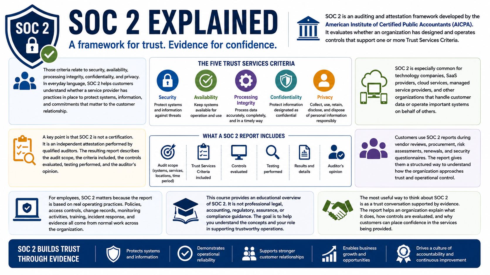

What Is SOC 2?
Introduction to SOC 2
Connecting to LMS... Progress: in progress
Version 1.0 | Date: 2026-06-16 | Educational overview of SOC 2 concepts, controls, evidence, and trust.

Narration
SOC 2 is an auditing and attestation framework developed by the American Institute of Certified Public Accountants, commonly known as the AICPA. It is used to evaluate whether an organization has designed and operates controls that support one or more Trust Services Criteria.
Those criteria relate to security, availability, processing integrity, confidentiality, and privacy. In everyday language, SOC 2 helps customers understand whether a service provider has practices in place to protect systems, information, and commitments that matter to the customer relationship.
SOC 2 is especially common for technology companies, SaaS providers, cloud services, managed service providers, and other organizations that handle customer data or operate important systems on behalf of others.
A key point is that SOC 2 is not a certification. It is an independent attestation performed by qualified auditors. The resulting report describes the audit scope, the criteria included, the controls evaluated, testing performed, and the auditor's opinion.
Customers use SOC 2 reports during vendor reviews, procurement, risk assessments, renewals, and security questionnaires. The report gives them a structured way to understand how the organization approaches trust and operational control.
For employees, SOC 2 matters because the report is based on real operating practices. Policies, access controls, change records, monitoring activities, training, incident response, and evidence all come from normal work across the organization.
This course provides an educational overview of SOC 2. It is not professional legal, accounting, regulatory, assurance, or compliance guidance. The goal is to help you understand the concepts and your role in supporting trustworthy operations.
The most useful way to think about SOC 2 is as a trust conversation supported by evidence. The report helps an organization explain what it does, how controls are evaluated, and why customers can place confidence in the services being provided.